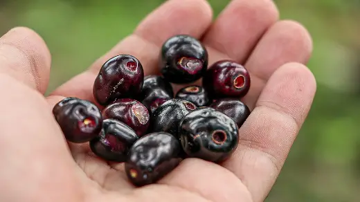

Drinks
Damson gin
Damson gin is made with wild damson and bullace.

How do you make damson gin?
Damsons steeped in gin with sugar until Christmas.
Wild ingredients
- Damson and bullace (Prunus domestica subsp. insititia): in season August to October
Watch the recipe

Video: swizz57 on YouTube